Using React in VS Code
React is a popular JavaScript library for building web application user interfaces developed by Facebook. VS Code supports React.js IntelliSense and code navigation out of the box.
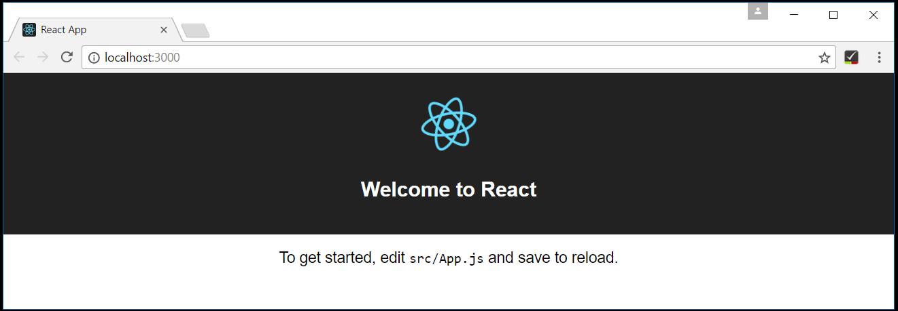
Welcome to React
We’ll be using the create-react-app generator for this tutorial. To install and use the generator as well as run the React application server, you’ll need the Node.js JavaScript runtime and npm (the Node.js package manager) installed. npm is included with Node.js which you can install from here.
Tip: To test that you have Node.js and npm correctly install on your machine, you can type
node --versionandnpm --version.
To install the create-react-app generator, in a terminal or command prompt type:
|
This may take a few minutes to install. You can now create a new React application by typing:
|
where my-app is the name of the folder for your application. This may take a few minutes to create the React application and install it’s dependencies.
Let’s quickly run our React application by navigating to the new folder and typing npm start to start the web server and open the application in a browser:
|
You should see “Welcome to React” on http://localhost:3000 in your browser. We’ll leave the web server running while we look at the application with VS Code.
To open your React application in VS Code, open another terminal (or command prompt) and navigate to the my-app folder and type code .:
|
Markdown Preview
In the File Explorer, one file you’ll see is the application README.md Markdown file. This has lots of great information about the application and React in general. A nice way to review the README is by using the VS Code Markdown Preview. You can open the preview in either the current editor group (Markdown: Open Preview ⇧⌘V (Windows, Linux Ctrl+Shift+V)) or in a new editor group to the side (Markdown: Open Preview to the Side ⌘K V (Windows, Linux Ctrl+K V)). You’ll get nice formatting, hyperlink navigation to headers, and syntax highlighting in code blocks.
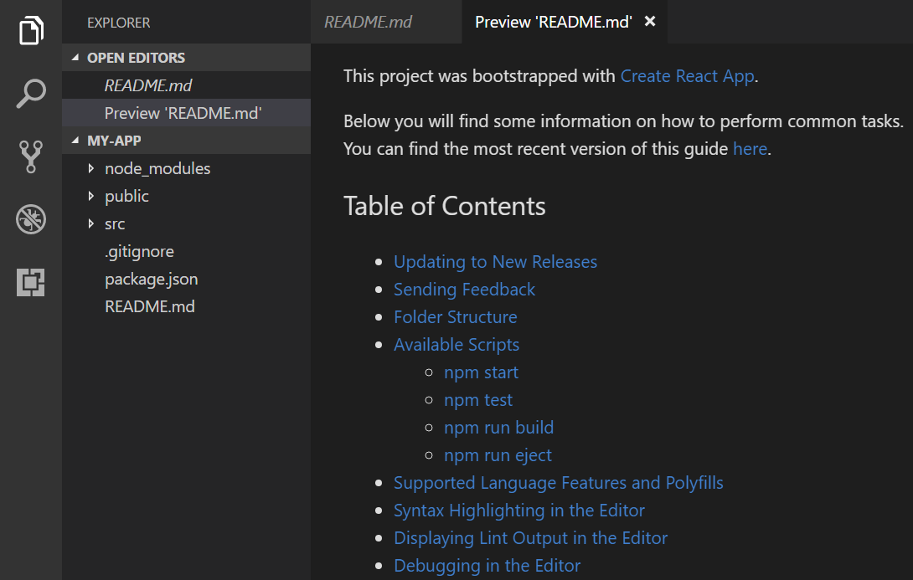
Syntax highlighting and bracket matching
Now open the src folder and select the index.js file. You’ll notice that VS Code has syntax highlighting for the various source code elements and, if you put the cursor on a parentheses, the matching bracket is also selected.
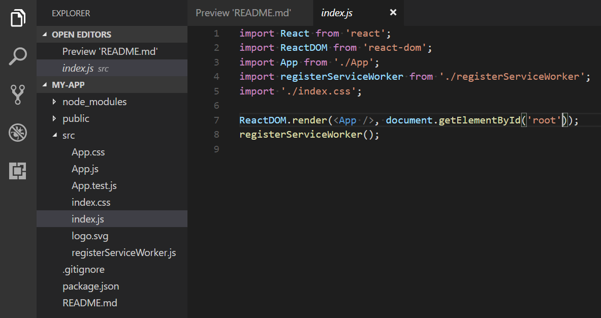
IntelliSense
As you start typing in index.js, you’ll see smart suggestions or completions.
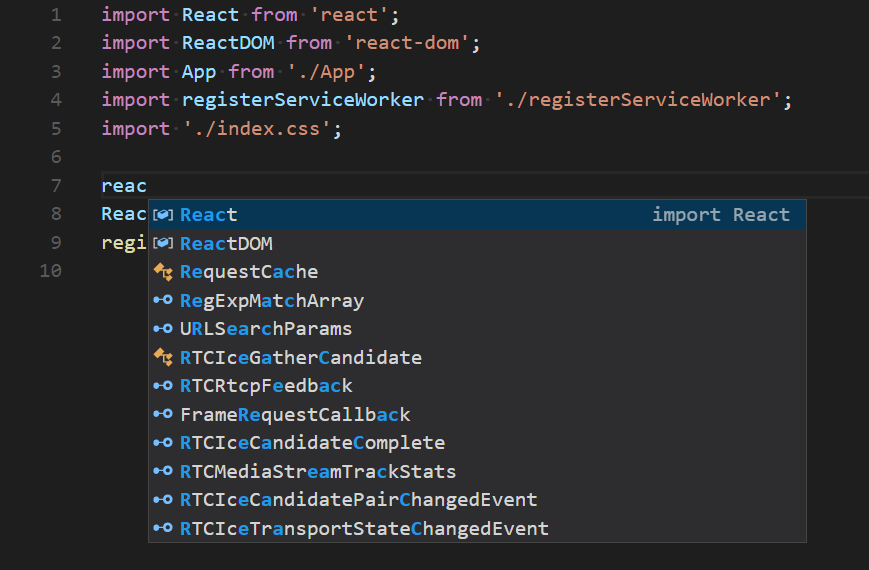
After you select a suggestion and type ., you see the types and methods on the object through IntelliSense.
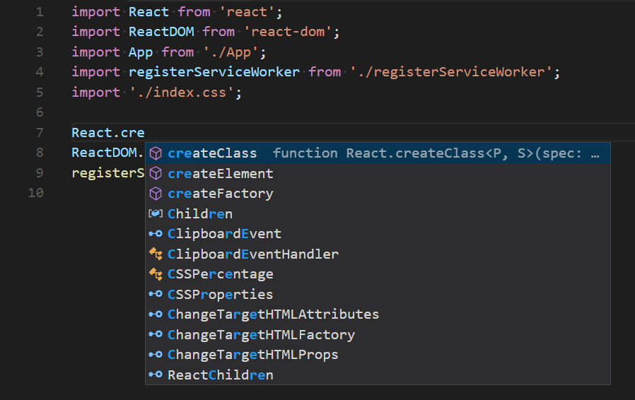
VS Code uses the TypeScript language service for it’s JavaScript code intelligence and it has a feature called Automatic Type Acquisition (ATA) which pulls down the npm Type Definition files (*.d.ts) for the npm modules referenced in the package.json.
If you select a method, you’ll also get parameter help:
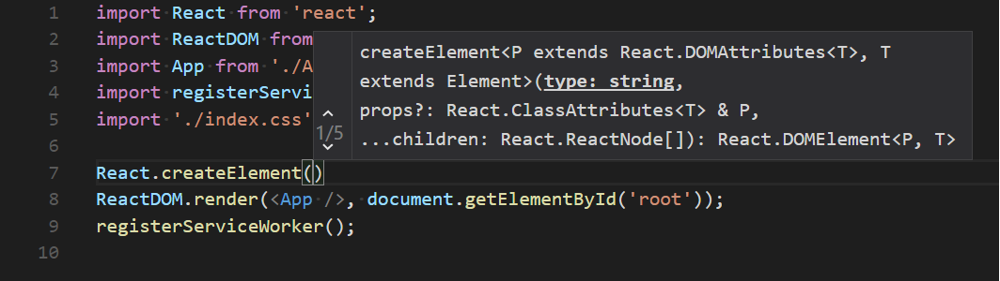
Go to Definition, Peek definition
Through the TypeScript language service, VS Code can also provide type definition information in the editor through Go to Definition (F12) or Peek Defintion (⇧⌘F12 (Windows, Linux Ctrl+Shift+F12)). Put the cursor over the App, right click and select Peek Definition. A Peek window will open showing the App definition from App.js.
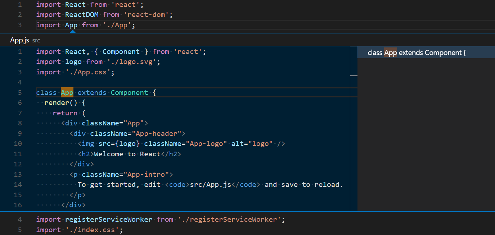
Press Escape to close the Peek window.
Hello World!
Let’s update the sample application to “Hello World!”. Add the link to declare a new H1 header and replace the <App /> tag in ReactDOM.render with element.
|
Once you save the index.js file, the running instance of the server will update the web page and you’ll see “Hello World!”.
Tip: VS Code supports Auto Save, which by default saves your files after a delay. Check File > Auto Save to turn on Auto Save or directly configure the
files.autoSaveuser setting.
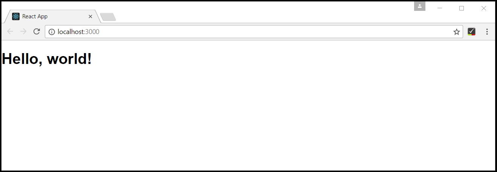
Debugging React
To debug the client side React code, we’ll need to install the Debugger for Chrome extension.
Note: This tutorial assumes you have the Chrome browser installed. The builders of the Debugger for Chrome extension also have versions for the Safari on iOS and Edge browsers.
Open the Extensions view (⇧⌘X (Windows, Linux Ctrl+Shift+X)) and type ‘chrome` in the search box. You’ll see several extension which reference Chrome.
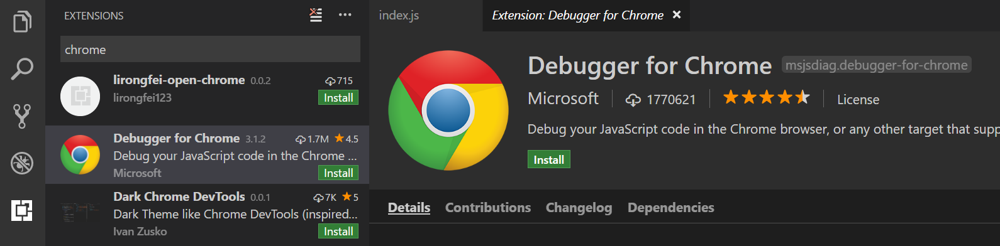
Press the Install button for Debugger for Chrome. The button will change to Installing then, after completing the installation, it will change to Reload. Press Reload to restart VS Code and activate the extension.
Set a breakpoint
To set a breakpoint in index.js, click on the gutter to the left of the line numbers. This will set a breakpoint which will be visible as a red circle.
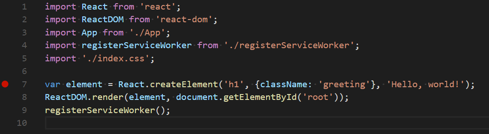
Configure the Chrome debugger
We need to initially configure the debugger. To do so, go to the Debug view (⇧⌘D (Windows, Linux Ctrl+Shift+D)) and click on gear button to create a launch.json debugger configuration file. Choose Chrome from the Select Environment dropdown. This will create a launch.json file in a new .vscode folder in your project which includes configuration to both launch the website or attach to a running instance.
We need to make one change for our example: change the port from 8080 to 3000. Your launch.json should look like this:
|
Press F5 or the green arrow to launch the debugger and open a new browser instance. The source code where the breakpoint is set runs on startup before the debugger was attached so we won’t hit the breakpoint until we refresh the web page. Refresh the page and you should hit your breakpoint.
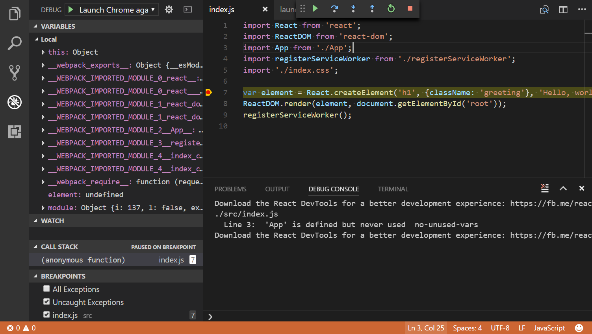
You can step through your source code (F10), inspect variables such as element, and see the call stack of the client side React application.
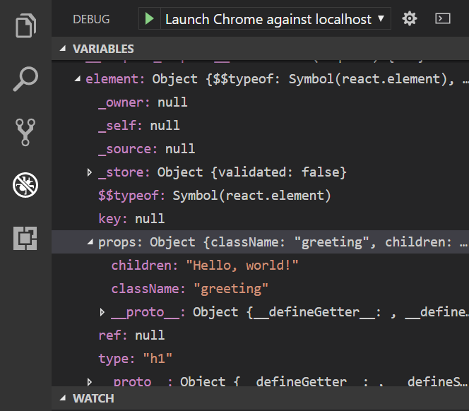
The Debugger for Chrome extension README has lots of information on other configurations, working with sourcemaps, and troubleshooting and you can review it directly within VS Code from the Extensions view by clicking on the extension item and opening the Details view.
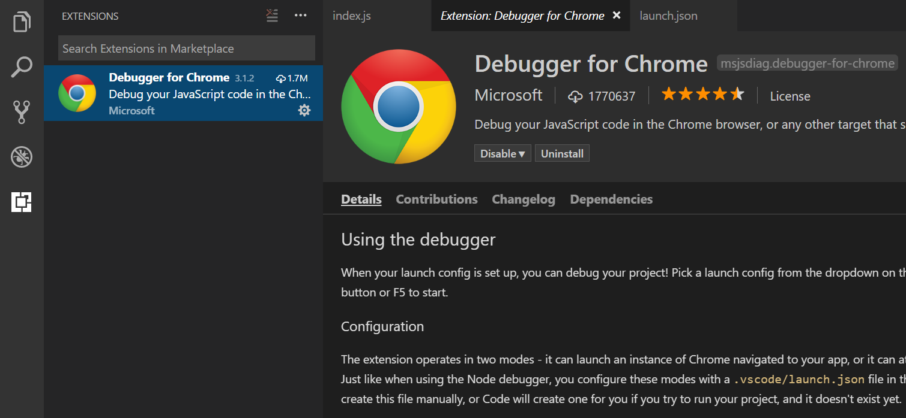
Linting
Linters analyze your source code and can warn you about potential problems before you run your application. VS Code include JavaScript language service has syntax error checking support support by default which you can see in action in the Problems panel (View > Problems ⇧⌘M (Windows, Linux Ctrl+Shift+M)).
Try making a small error in your React source code and you’ll see a green squiggle and a warning in the Problems panel.
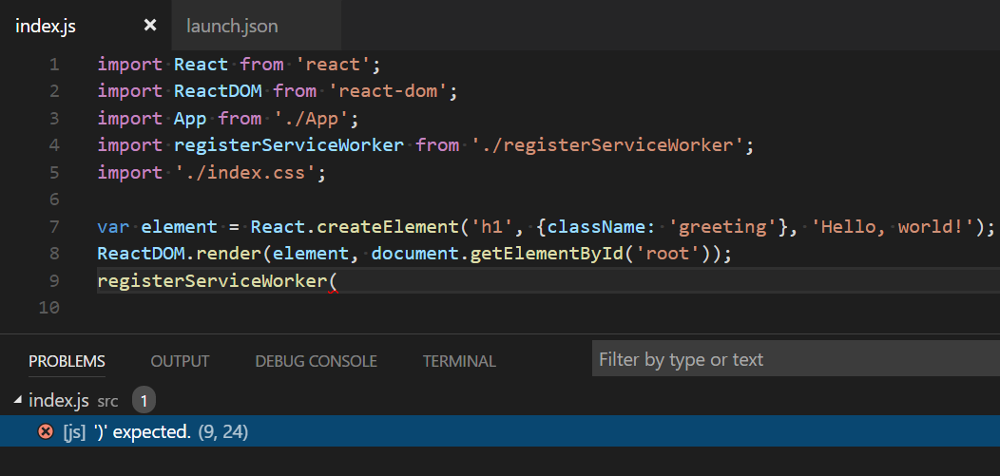
Linters can provide more sophisticated analysis, enforcing coding conventions and detecting anti-patterns. A popular JavaScript linter is ESLint. ESLint when combined with the ESLint VS Code extension provides a great in-product linting experience.
First install the ESLint command line tool:
|
Then install the ESLint extension by going to the Extensions view and typing ‘eslint’.
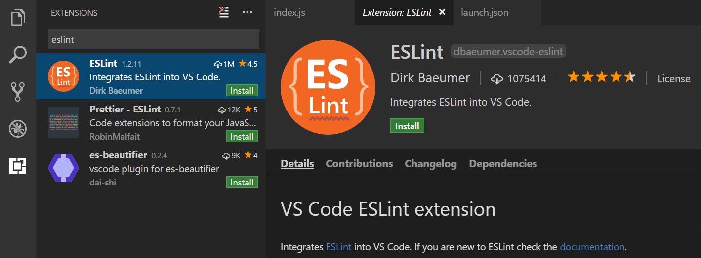
Once the ESLint extension is installed and VS Code reloaded, you’ll want to create an ESLint configuration file eslintrc.json. You can create one using the extension’s ESLint: Create ‘eslintrc.json’ File command from the Command Palette (⇧⌘P (Windows, Linux Ctrl+Shift+P)).
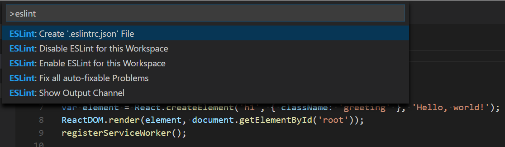
The command will create a .eslintrc.json file in your project root:
|
ESLint will now analyze open files and shows a warning in index.js about ‘App’ being defined but never used.

You can modify the ESLint rules and the ESLint extension provides IntelliSense in eslintrc.json.
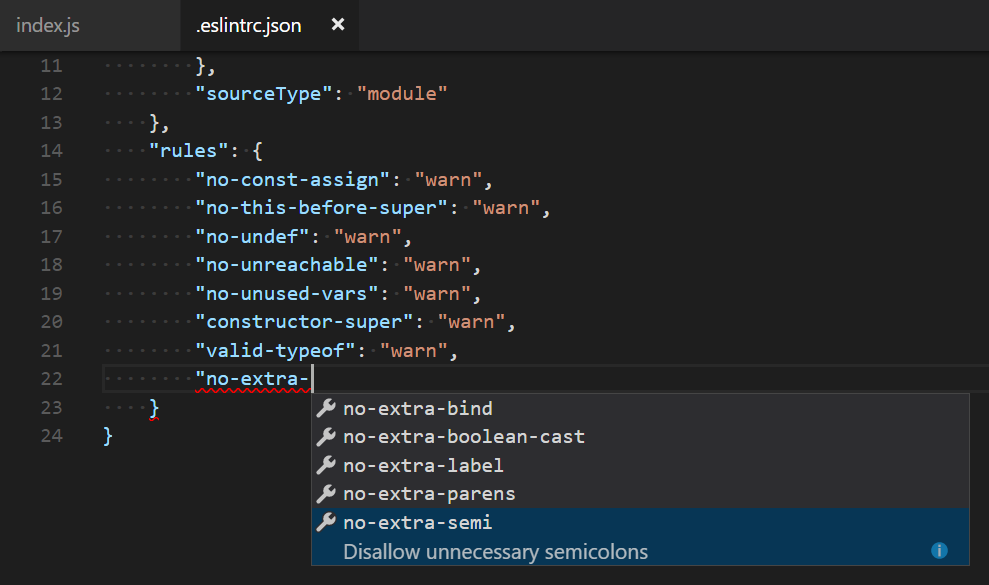
Let’s add an error rule for extra semi-colons:
|
Now when you mistakenly have multiple semicolons on a line, you’ll see an error (red squiggle) in the editor and error entry in the Problems panel.
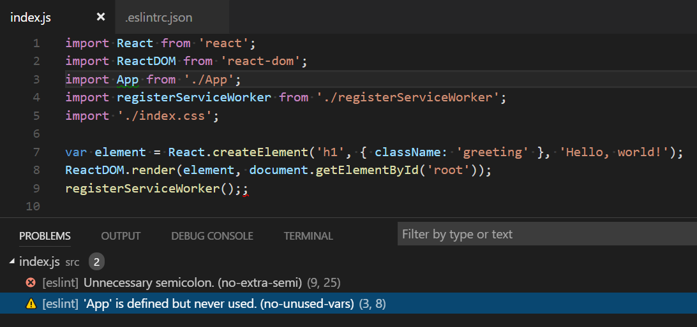
Popular Starter Kits
In this tutorial, we used the create-react-app generator to create a simple React application. There are lots of great samples and starter kits available to help build your first React application.
VS Code React Sample
This is a sample React application used for a demo at this year’s //Build conference. The sample creates a simple TODO application and includes the source code for a Node.js Express server. It also shows how to use the Babel ES6 transpiler and then use webpack to bundle the site assets.
MERN Starter
If you’d like to see a full MERN (MongoDB, Express, React, Node.js) stack example, look at the MERN Starter. You’ll need to install and start MongoDB but you’ll quickly have a MERN application running. There is helpful VS Code-specific documentation at vscode-recipes which details setting up Node.js server debugging.
TypeScript React
If you’re curious about TypeScript and React, you can also create a TypeScript version of the create-react-app application. See the details at TypeScript-React-Starter on the TypeScript Quick Start site.